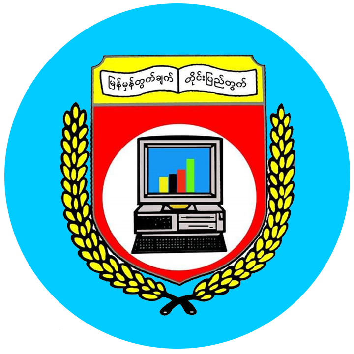

University of Computer Studies, Yangon
မြန်မှန်တွက်ချက် တိုင်းပြည်အတွက်
You can't spell SUCCESS without UCSY
Welcome
 |
The University of Computer Studies, Yangon (UCSY) located in the outskirts of Yangon (Hlaw Gar), is the leading IT and computer science university of Myanmar. The university, administered by the Ministry of Education, offers undergraduate and graduate degree programs in computer science and technology. The language of instruction at UCSY is English. Along with the University of Computer Studies, Mandalay, UCSY is one of two senior universities specialized in computer studies, and also one of the most selective universities in the country. |
|---|
|
|
|---|
|
The University of Computer Studies, Yangon (UCSY) located in the outskirts of Yangon (Hlaw Gar), is the leading IT and computer science university of Myanmar. The university, administered by the Ministry of Education, offers undergraduate and graduate degree programs in computer science and technology. The language of instruction at UCSY is English. Along with the University of Computer Studies, Mandalay, UCSY is one of two senior universities specialized in computer studies, and also one of the most selective universities in the country. |